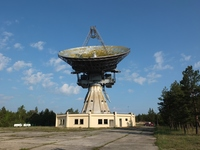
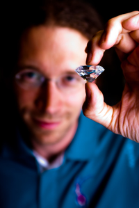
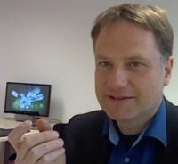
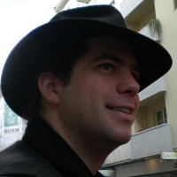

Some electronics books from the 50s claimed making triode tubes would be
an impossible endeavour for amateurs. Today, there are at least two DIY
laboratories making not only triodes but also all sorts of vacuum
electron devices.
Three years after the first GPS satellite was launched, few people used
the technology, which was perceived as very complicated and expensive.
Yet, someone successfully operated his homebrew receiver made from
hundreds of that time's electronic parts.
These days, microchips are often thought to be impenetrable and
impossible to manufacture without large-scale facilities. But many
individuals are reverse engineering microelectronics designs, often
breaking security systems based on the obscurity of the silicon layout.
Some are even devising DIY methods to replicate parts of the microchip
manufacturing process, with impressive results.
What are the frontiers of DIY technology? The EHSM conference series features presentations
of the brightest DIY achievements. But we do not want to stop at DIY. In fact, we should not,
because teamwork is the only way to get the big things done.
The open source ethos is about keeping the freedom and openness of DIY
when many people are involved. At a time when thousands of developers
from hundreds of companies contribute to Linux and the world's largest
physics laboratories share openly licensed hardware designs on OHWR, we
explore the cutting-edge open source hardware and software
practices.
2012: December 28-30, TU Berlin [website archive | videos | videos (alt)]
2014: June 27-29, DESY Hamburg [website archive | videos]
20XX: we need a venue and volunteers, email us (team @ this domain). warning: this is hard work that requires a strong sense of responsibilities.
 | Will Jack - "I built myself a nuclear fusion reactor when I was 16" At the time of EHSM-2012, Will Jack was a 17 year old high school student from the US who enjoyed nothing more than building nuclear fusion reactors in his basement. He presented his work on the Inertial Electrostatic Confinement (IEC) fusion reactors that he has built, speaking not only about the theory behind them, but how he developed them, his current work, and his goals for the future as well. |
 | Bionerd23 - Radioactivity is in the air for you and me An anonymous woman who goes by the handle of "bionerd23" gave a very comprehensive, bottom-up view of man-made and natural nuclear radiation and how you can detect it. Mind you - when we say "comprehensive", this means things like building yourself ion chambers for detecting radiation, and studying and operating a small-scale homemade fusion reactor. |
 | Aleksander Zawada - DIY triodes and other vacuum tubes Aleksander runs "Prywatna Wytwórnia Lamp" (PWL), a one-man DIY vacuum tube laboratory in Warsaw. The name translates to "Private Tube Manufacturer" - a pun on PWLR ("National Tube Manufacturer"), the first Polish tube manufacturer after WWII. There, he makes not only triodes, but also canal ray tubes, a RGB magic eye, several Crookes tubes, Geiger tubes, and many other incredibly amazing devices. This is serious stuff - he starts with raw materials like glass, metal and phosphor powders. |
 | Evangelia Gousiou - Open Hardware at CERN Evangelia Gousiou presented the Open Hardware Initiative at CERN, covering various aspects, such as the Open Hardware Repository, the CERN Open Hardware Licence, the commercial paradigm used in collaborating with companies and current efforts to boost FOSS tools for hardware development. |
 | Ben Krasnow - Homebuilt X-ray backscatter imaging system (airport body scanner) Ben Krasnow, then "Hacker Extraordinaire" at video game company Valve, built an X-ray backscatter imaging system from parts found on eBay. This system works by scanning a very thin beam of X-rays across the target, and measures the amount of backscatter for a given beam position. The beam is scanned mechanically by a rotating chopper (collimator) wheel, and by tilting the rotating wheel on an orthogonal axis. The output image is generated on an oscilloscope by matching the horizontal scan speed to the rotating wheel, and using a potentiometer to measure the vertical axis position. The scope's brightness (z axis) is controlled by the amount of backscatter signal received by a large-area detector. Thus, the image is constructed bit by bit. He might also talk about Raman spectroscopy and other hacks, stay tuned. |
|  | Roberts Trops - VIRAC: Radio astronomy in Latvia In 1994, the newly independent Latvia took over a formerly secret soviet military installation: the satellite tracking site at Ventspils, consisting of a 32 meter and a 16 meter dish. With its large telescopes in the middle of a huge, quiet, almost uninhabited stretch of forest along the Latvian coast, the Ventspils site is one of the most fascinating observatories to visit in Europe. After years of hard work by scientists and technicians from Ventspils University, the site is now operating again, but is now used as an astronomical observatory. Roberts Trops and his colleagues will tell about this extraordinary project, starting from the time when this place appeared on no maps. The talk will cover the challenges of renovation and what has been achieved until now, the current applications for the two telescopes and how VIRAC became a partner in the international astronomical community. |
|  | Nicolas Wöhrl - Synthetic diamonds for the quantum computer revolution The idea behind quantum computing is to use quantum phenomena such as superposition and entanglement to perform data processing. However, applying these quantum concepts to macroscopic devices like computers is an enormous challenge for information scientists and physicists alike. What does it make so hard? Well, scientists have to find a material in which they are able to store and manipulate quantum bits (qubits). Since quantum states are very fickle and thus hard to abide, the most important task is to find materials in which qubits can be stored for a sufficient long time. Surprisingly they found these properties in diamond. |
|  | Mirco Imlau - Optics & Photonics with Lego-bricks: Open Hardware for young researchers How to fascinate young researchers for the field of optics & photonics? Is there any experimental platform for them to make research at a professional level? How can they follow their own ideas? These questions initiated the idea of transferring optics/photonics-experiments to schools and education by using Lego-bricks. The project essentially involves the development of experiments at professional level with excellent opto-mechanical quality at low costs. |
|  | Clifford Wolf - Open Source Verilog HDL Synthesis with Yosys Learn how to use the open source synthesizer Yosys to create your own custom flow and discover why open source HDL synthesis is important for researchers, hobbyists, educators and engineers alike. The presentation covers basic concepts of Yosys and writing simple synthesis scripts. Yosys is the first step towards a fully open FPGA/ASIC toolchain, and is currently used with vendor place-and-route tools. |
To promote EHSM-2014, we etched the world's smallest comic onto a single strand of hair. The media loved it.